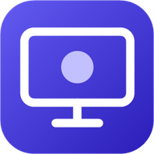
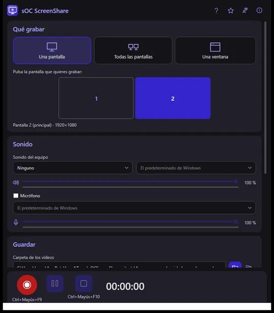
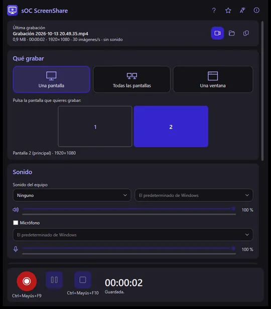
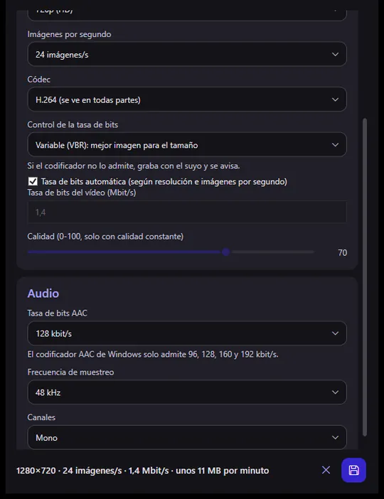
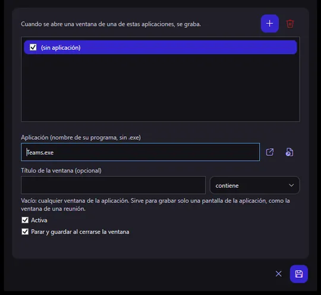

Soporte · sOC ScreenShare
Cómo funciona sOC ScreenShare, pantalla a pantalla, y qué hace cada opción.
En esta guía




sOCScreenShare.exe.Requisitos: Windows 10 (versión 2004) o posterior, o Windows 11, de 64 bits. Para grabar solo el sonido de una aplicación hace falta Windows 11 o Windows 10 compilación 20348 o posterior; en versiones anteriores la aplicación lo dice y no graba otro sonido en su lugar.
La primera vez se abre la «Guía de configuración», con cuatro pasos (Atrás / Siguiente abajo): dónde van los vídeos, el sonido del equipo (con un botón a la configuración de sonido de Windows), el micrófono (con un botón a su privacidad en Windows) y los atajos y la grabación automática (con Arrancar con Windows). Se vuelve a abrir cuando quieras con el botón de ayuda (?).
El botón «Calidad» abre un diálogo aparte. Vídeo: resolución máxima (original, 2160p, 1440p, 1080p, 720p o 480p; nunca agranda), imágenes por segundo (15, 24, 30 o 60), tasa de bits automática o en Mbit/s, códec H.264 (se ve en todas partes) o H.265 (la mitad de tamaño, si tu equipo tiene codificador) y control de la tasa (variable, constante o calidad constante). Audio: 96, 128, 160 o 192 kbit/s, 44,1 o 48 kHz, mono o estéreo. Abajo se ve cómo saldrá el vídeo y cuántos MB ocupa por minuto.
En los ajustes, «Grabación automática»: añade una regla con la aplicación (de las abiertas o eligiendo su .exe) y, si quieres, un título de ventana (contiene o expresión regular) para grabar solo una pantalla concreta de esa aplicación, como la ventana de una reunión. Cada regla tiene Activa y Parar y guardar al cerrarse la ventana. Con la grabación automática encendida, cerrar la ventana deja ScreenShare junto al reloj, y puede arrancar con Windows. Si ya hay una grabación en marcha no empieza otra. Al empezar y al acabar sale un aviso junto al reloj.
Ctrl+Mayús+F9 empieza a grabar y Ctrl+Mayús+F10 para. Se cambian en los ajustes pulsando la combinación nueva; no admite las que usa Windows y avisa si otra aplicación ya tiene la misma.
Solo entra el sonido de esa aplicación: si no estaba sonando, el vídeo sale sin sonido. Si tu Windows es anterior a la compilación 20348, la ventana lo avisa: ahí no se puede separar el sonido de una aplicación.
Solo salen las ventanas visibles con título. Si está minimizada, restáurala; el botón de recargar actualiza la lista.
Usa «Óptima para compartir», baja la resolución o las imágenes por segundo, o elige H.265 si tu equipo lo tiene. El diálogo de Calidad enseña los MB por minuto antes de grabar.
No: mientras graba, sus ventanas se quedan fuera de la grabación.
Sí: sOCScreenShare.exe --record <segundos> con opciones para qué grabar, el sonido y la calidad; --help las enseña.
Abre una incidencia en GitHub contando qué te pasa y con qué versión y dispositivo.